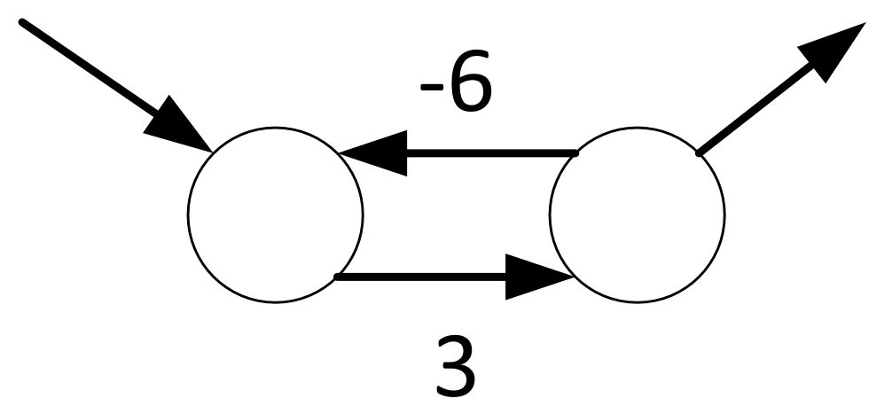
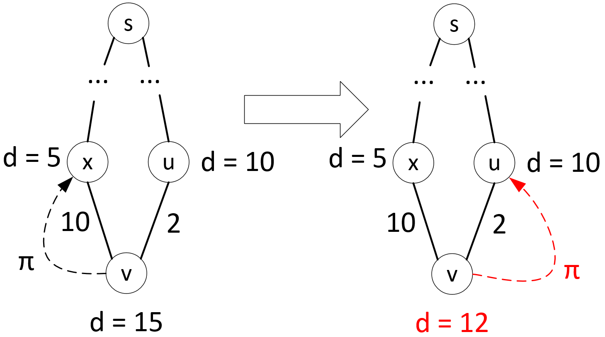

Вес цикла на рисунке $= –3$

Перед началом работы каждого из алгоритмов используется общий алгоритм инициализации:
Таким образом, проверяется существование более подходящей кандидатуры для предшествования данной вершине на кратчайшем пути и, если такой кандидат находится, он заменяет текущего предшественника

При построении алгоритмов поиска кратчайших путей используются некоторые свойства кратчайших путей и операции ослабления:
Суть работы данного алгоритма состоит в последовательном добавлении вершин, для которых значение $d$ минимально, из множества $V - S$ в множество $S$ и ослаблении всех выходящих из очередной вершины рёбер